上线部署记录¶
1. 基本背景（AI助手配置）¶
1.1 Discuz! 插件项目环境说明¶
本插件项目采用三环境架构：开发环境、测试环境与生产环境，确保插件在全流程中具备可控性与高可用性。
1.1.1 开发环境¶
- 操作系统：Windows 10 Pro 64位
- 开发工具：
- Visual Studio Code v1.100.2
- MobaXterm Personal Edition v23.5 (通过SSH连接远程服务器)
- 插件路径：
-
开发版本目录：
-
发布版本目录：
-
用途：
- 本地代码开发、初步测试
- 版本归档与整理
- 远程上传测试与部署
1.1.2 测试环境¶
- 部署位置：阿里云服务器
- 公网IP：
47.99.192.57 - 系统配置：
- 操作系统：Debian 11
- Web服务：Nginx
- PHP版本：7.4.33
- 数据库：MariaDB Ver 15.1
- 目录结构：
-
开发版本路径：
-
发布版本路径：
-
Discuz! 安装目录：
-
插件部署运行目录：
-
用途：
- 插件部署与功能测试
- 提交路径变更验证
- 测试通过后发布归档
1.1.3 生产环境¶
- 部署位置：阿里云服务器
- 公网IP：
121.43.150.111 - 系统配置：与测试环境一致
- 目录结构：与测试环境完全一致
- 用途：
- 部署测试通过的插件正式版本
- 正式运行对外提供服务
- 最终兼容性与性能验证
1.1.4 使用规范流程¶
- 在开发环境完成插件编码，保存在 DVersion 文件夹。
- 使用 CMD 同步代码至测试环境 Dversion 目录，测试部署并验证功能。
- 验证通过后保存至测试环境 Rversion 目录，并同步至开发环境发布目录。
- 最终通过 CMD 将发布版本同步上传至生产环境 Rversion 目录，并进行正式部署上线。
1.2 知识库的构建¶
在回答问题和提供建议时，遵循以下信息来源优先级顺序，以确保信息的权威性、准确性与实用性。
1.2.1 官方权威资料（最高优先级）¶
- Discuz! 官网：https://www.discuz.vip/
- Discuz! 开发文库：https://open.dismall.com/?ac=document&page=dev
✅ 用途：
- 插件API文档
- 系统机制说明（Hook机制、模板系统）
- 安全补丁与平台变更
1.2.2 上传的学习笔记（次优先级）¶
以下为上传的内部技术资料（Markdown格式）：
- 《开发实践-业务办理.md》
- 《开发-插件机制.md》
- 《开发-模板机制.md》
- 《开发—产品框架.md》
- 《开发-数字字典.md》
- 《运维-升级搬家.md》
- 《运维-扩展服务.md》
- 《运维-环境搭建.md》
- 《运营-前台功能.md》
- 《运营-后台管理.md》
✅ 用途：
- 插件开发流程、实践经验
- 环境配置、上线操作
- 管理端与用户端功能梳理
1.2.3 用户上传的插件代码文件（重要实用参考）¶
常用上传文件包括：
- 前端样式与脚本：
custom.css,common.css,jquery.min.js,jquery-weui.min.js - 模板页面：
front_order_form.htm,order_list.htm,success_dialog.htm - 插件接口与逻辑：
xigua_partnercenter.inc.php,simtelecom_order.inc.php,plugin.php
✅ 用途：
- 分析插件结构与部署路径
- 判断接口调用、表单处理与权限逻辑
- 样式与页面兼容性检查
1.2.4 Discuz! 社区论坛（经验补充）¶
✅ 用途：
- 查找开发/部署中遇到的常见问题
- 借鉴其他用户的实战解决方案
1.2.5 通用互联网搜索（最低优先级）¶
- 当以上所有来源都无法获取有效信息时才使用
- 搜索结果需经语境判断与内容核查后才会提供给用户
本优先级机制确保开发过程中的信息引用**权威性优先、实践性充分、解释性明确**，适用于插件开发、调试、部署、运营各阶段。
2. 插件上线和部署¶
2.1 上线插件xigua_simtelecom v1.0 (25年6月5日)¶
2.1.1 生产环境系统和数据库备份¶
1）常规操作
- Discuz!系统备份
- 关闭站点以确保数据一致性： 在进行备份前，建议暂时关闭站点，防止用户在备份过程中产生新的数据，确保备份的一致性。
- 登录 Discuz! 后台管理中心；
- 导航至「全局」>「站点关闭」；
- 设置「站点状态」为关闭，并填写关闭原因提示；
- 保存设置。
- 关闭站点以确保数据一致性： 在进行备份前，建议暂时关闭站点，防止用户在备份过程中产生新的数据，确保备份的一致性。
- 数据库备份
- 方法一：使用 Discuz! 后台备份
- 登录 Discuz! 后台管理中心；
- 导航至「站长」>「数据库」>「备份」；
- 选择备份类型：
- Discuz! 和 UCenter 数据：备份所有数据表；
- 自定义备份：根据需要选择特定的数据表；
- 点击「提交」开始备份；
- 备份完成后，备份文件将保存在站点根目录的 data/backup_xxxxxx/ 文件夹中；
- 使用 FTP 或 SFTP 下载备份文件到本地安全位置保存。
- 方法二：使用 phpMyAdmin 备份
- 登录 phpMyAdmin；
- 选择对应的数据库；
- 点击「导出」；
- 选择导出方式为「快速」，格式为「SQL」
- 点击「执行」，下载备份文件到本地。
- 方法一：使用 Discuz! 后台备份
2）实际操作
-
Discuz! 系统备份（Linux命令方式）
- 考虑到系统实际用户不多，不关闭站点直接进行备份。
- 使用 rsync 增量同步 + 手动打包：目标是同步一份可用于恢复的备份结构，可以用 rsync 同步至备份目录，再按天打包变更文件
- 方案对比：tar 增量 vs rsync 增量
维度 tar --listed-incremental rsync --link-dest 快照式备份 🗃 文件结构清晰 ❌ .tar.gz 打包，恢复需解压 ✅ 文件夹结构直接可见 🧠 增量机制 自动记录上次状态（.snar 文件） 手动指定对比目录 --link-dest 🛠 可控性 增量控制较难，恢复需按顺序解压多包 任何时间点都能直接用完整目录恢复 📦 空间利用率 高（只能按文件变动重新打包） 更高（未变文件用硬链接，不重复存储） 🔄 恢复难度 高，需要逐个解压、按顺序回滚 低，进入对应日期目录即可 🚀 执行速度 慢（每次压缩、处理全部文件） 快（只复制变更文件/链接） 🧩 压缩率 高（适合归档长期存储） 低（原始结构，适合短期或多版本快速恢复） - 恢复 rsync --link-dest 快照式增量备份非常简单，你只需选择某个具体日期的完整目录，然后复制回原路径即可。
- 问题一：为什么备份要“每天一个目录”而不是“不断叠加进一个目录”？如果每次备份都叠加在一个目录下，你将面临这些问题：
问题 描述 ❌ 数据状态不可回退 没有办法回到某个历史时刻的完整状态 ❌ 文件被删除或替换时不可追踪 如果某个文件在 6 月 4 日还在，6 月 5 日被删，那么你无法找回 ❌ 恢复操作不可验证 不知道哪些文件是旧的，哪些是新增的，也不能验证恢复完整性 ✅ 多版本目录则可保留完整“快照” 每天的目录就是一个独立的“系统镜像” - 关键点：rsync 的硬链接机制不会真正复制文件，只占用极小空间。
- 相同文件 → 用硬链接实现共享存储；
- 所以多个目录看似复制，其实并不重复占空间；
- 节省空间的同时提供了“多个版本”恢复能力。
- 参数控制 rsync -avz -delete
- -a: 保留权限
- -v：显示过程
- -z: 压缩传输
- --delete: 保持目标与源一致（慎用）；
- 问题 2：为什么恢复要“清空旧代码”，不能直接覆盖？原因：防止旧文件残留导致系统异常
- 备份策略：
- 策略1： 用户图片 pics/ → 测试环境归档目录（每月15日哈法时间凌晨3点增量同步）
- 策略 2：整站代码 58haiwaiweb/（不含文件夹pics/和config/）
- 版本归档：每日备份（不加 --delete）→ /home/ecs-user/backup/58haiwaiweb/YYYY-MM-DD/ （不含
- 在测试环境中这些归档只做“备份用途”，不做运行部署；
- 2-2. 结构同步：使用 --delete 保持主站与测试站一致性
场景 风险 示例 ✅ 只复制变更 ❌ 旧版本文件仍存在，可能与新版本冲突 删除了一个模块但残留老文件仍加载 ✅ 完整清空再恢复 ✅ 恢复环境干净、可预测 所有文件按备份目录还原，100%一致 ✅ Discuz 插件机制强依赖文件路径 ✅ 确保 hook、模板、类文件版本匹配 否则可能报错、无法加载钩子类 - 最佳实践总结
操作 建议方式 原因 备份 每次完整目录 + 日期区分 保留快照、可回溯、多版本 恢复 先清空旧目录，再全量还原 防止残留、确保一致、避免异常 相关命令集# 先查看磁盘总体使用情况，df：显示文件系统磁盘空间使用情况；-h：以人类可读的方式（MB/GB）显示 df -h # 输出：/ 分区总空间 40G，已用 21G，剩余 18G，可用 55%。 # Filesystem Size Used Avail Use% Mounted on # /dev/vda1 40G 21G 18G 55% / # 查看 Discuz 安装目录占用大小：du：查看目录大小；-s：只显示汇总；-h：以 MB/GB 单位显示。 sudo du -sh /var/www/html/58haiwaiweb # 输出： 15G /var/www/html/58haiwaiweb # 进一步分析“站点中最大文件夹”： sudo du -h --max-depth=1 /var/www/html/58haiwaiweb | sort -hr | head -10 # 输出如下： # 15G /var/www/html/58haiwaiweb/source # 15G /var/www/html/58haiwaiweb # 79M /var/www/html/58haiwaiweb/uc_server # 40M /var/www/html/58haiwaiweb/data # 13M /var/www/html/58haiwaiweb/static # 5.6M /var/www/html/58haiwaiweb/template # 3.3M /var/www/html/58haiwaiweb/pic # 2.1M /var/www/html/58haiwaiweb/install # 316K /var/www/html/58haiwaiweb/uc_client # 244K /var/www/html/58haiwaiweb/api # 进一步分析/source sudo du -h --max-depth=2 /var/www/html/58haiwaiweb/source | sort -hr | head -5 # 输出如下： # 15G /var/www/html/58haiwaiweb/source/plugin # 15G /var/www/html/58haiwaiweb/source # 13G /var/www/html/58haiwaiweb/source/plugin/xigua_hb # 2.1G /var/www/html/58haiwaiweb/source/plugin/xigua_hx # 29M /var/www/html/58haiwaiweb/source/plugin/xigua_login # 进一步分析/xigua_hb sudo du -h --max-depth=2 /var/www/html/58haiwaiweb/source/plugin/xigua_hb | sort -hr | head -5 # 输出如下： # 13G /var/www/html/58haiwaiweb/source/plugin/xigua_hb # 9.5G /var/www/html/58haiwaiweb/source/plugin/xigua_hb/pics # 2.7G /var/www/html/58haiwaiweb/source/plugin/xigua_hb/tmp # 549M /var/www/html/58haiwaiweb/source/plugin/xigua_hb/pics/202304 # 521M /var/www/html/58haiwaiweb/source/plugin/xigua_hb/pics/202305 #统计 pics/ 目录下每个子文件夹（按月份命名）的占用空间 sudo du -h --max-depth=1 /var/www/html/58haiwaiweb/source/plugin/xigua_hb/pics | sort -hr # 策略 1：用户图片 pics/ → 测试环境归档目录 /home/ecs-user/backup/pics（不加 --delete），每月 15 日凌晨 3 点（Halifax 本地时间） # 第一次完整同步命令（手动执行） # 在生产环境执行以下命令，把所有月份数据都推送到测试环境的备份目录： rsync -avz /var/www/html/58haiwaiweb/source/plugin/xigua_hb/pics/ ecs-user@47.99.192.57:/home/ecs-user/backup/pics/ # 自动化每月备份的办法（backup_pics_monthly.sh）+计划任务（Crontab） # 第一步：配置 SSH 免密登录（生产服务器 → 测试服务器 的 SSH、scp、rsync 连接免密） # 在生产环境执行（生成公钥）： ssh-keygen -t rsa -b 2048 # 一路回车（生成密钥对（私钥 ~/.ssh/id_rsa，公钥 ~/.ssh/id_rsa.pub）） # 把公钥安装到 测试服务器 的 ~/.ssh/authorized_keys： ssh-copy-id ecs-user@47.99.192.57 # 在生产服务器测试： ssh ecs-user@47.99.192.57 'echo success' # 不提示输入密码即为成功配置。 #第二步：编写自动化脚本 #!/bin/bash # 计算上个月的月份（格式：202405） last_month=$(date -d "$(date +%Y-%m-01) -1 month" +%Y%m) src_dir="/var/www/html/58haiwaiweb/source/plugin/xigua_hb/pics/${last_month}/" dest_host="ecs-user@47.99.192.57" dest_dir="/home/ecs-user/backup/pics/${last_month}/" # 检查源目录是否存在 if [ -d "$src_dir" ]; then echo "$(date): 准备同步 $src_dir" # 在目标服务器创建目标目录（如不存在） ssh "$dest_host" "mkdir -p $dest_dir" # 执行同步（免密码） rsync -avz "$src_dir" "${dest_host}:${dest_dir}" echo "$(date): 同步完成 $last_month" else echo "$(date): 源目录不存在：$src_dir，跳过" fi # 第三步：给脚本加执行权限： chmod +x /home/ecs-user/scripts/backup_pics_monthly.sh # 第四步：设置Crontab计划任务 crontab -e 0 3 15 * * /bin/bash /home/ecs-user/scripts/backup_pics_monthly.sh >> /home/ecs-user/scripts/pics_backup.log 2>&1 #策略2.1： 每周快照备份脚本（生产环境本机） # 第一步：首次完整备份（建议只执行一次） # 为了尽量节省空间，先把照片迁移 # 建立迁移的文件夹 mkdir -p /home/ecs-user/backup/58haiwaiweb/source/plugin/xigua_hb/pics # 迁移相关照片（保留一年内的照片） /var/www/html/58haiwaiweb/source/plugin/xigua_hb/pics/2023* \ /var/www/html/58haiwaiweb/source/plugin/xigua_hb/pics/202401 \ /var/www/html/58haiwaiweb/source/plugin/xigua_hb/pics/202402 \ /var/www/html/58haiwaiweb/source/plugin/xigua_hb/pics/202403 \ /var/www/html/58haiwaiweb/source/plugin/xigua_hb/pics/202404 \ /var/www/html/58haiwaiweb/source/plugin/xigua_hb/pics/202405 \ /var/www/html/58haiwaiweb/source/plugin/xigua_hb/pics/202406 \ /home/ecs-user/backup/58haiwaiweb/source/plugin/xigua_hb/pics/ # 删除生产站点下 /pics/ 中 2024年6月及以前的目录。 sudo rm -rf \ /var/www/html/58haiwaiweb/source/plugin/xigua_hb/pics/2023* \ /var/www/html/58haiwaiweb/source/plugin/xigua_hb/pics/202401 \ /var/www/html/58haiwaiweb/source/plugin/xigua_hb/pics/202402 \ /var/www/html/58haiwaiweb/source/plugin/xigua_hb/pics/202403 \ /var/www/html/58haiwaiweb/source/plugin/xigua_hb/pics/202404 \ /var/www/html/58haiwaiweb/source/plugin/xigua_hb/pics/202405 \ /var/www/html/58haiwaiweb/source/plugin/xigua_hb/pics/202406 # 第二步： 编写全备脚本backup_full_58haiwaiweb.sh（手动 or 后续自动） backup_date=$(date +%F) backup_dir="/home/ecs-user/backup/58haiwaiweb/${backup_date}" mkdir -p "$backup_dir" rsync -avz /var/www/html/58haiwaiweb/ "$backup_dir" # 第三步： 设置定期计划任务（每周三 02:00 Halifax 时间） crontab -e 0 2 * * 3 /bin/bash /home/ecs-user/scripts/backup_full_58haiwaiweb.sh >> /home/ecs-user/scripts/backup_full.log 2>&1 # 后续恢复 Discuz! # 第一步：恢复数据库 mysql -u root -p 58haiwaiweb < /home/ecs-user/backup/sql/58haiwaiweb-2025-06-05.sql # 第二步：恢复网站代码 # 清空原有部署代码（⚠️ 高风险操作，请确保路径正确！） sudo rm -rf /var/www/html/58haiwaiweb/* # 复制快照内容回站点目录 # -a：归档模式，保留文件的所有属性（权限、时间戳、软链等）； # /home/ecs-user/backup/58haiwaiweb/2025-06-05/.： # 表示复制目录 内部内容（而不是目录本身）； # 点号 . 是关键，否则会导致路径错位； sudo cp -a /home/ecs-user/backup/58haiwaiweb/2025-06-05/. /var/www/html/58haiwaiweb/ # 第三步：检修正权限 # 生产站点目录 /var/www/html/58haiwaiweb 及其文件属主均为 www-data:www-data； # 站点恢复后，为确保新复制的文件权限一致，仍建议执行修正命令： sudo chown -R www-data:www-data /var/www/html/58haiwaiweb # 第四步：重启服务使配置即时生效 # 重启 PHP-FPM 服务 sudo systemctl restart php7.4-fpm # 重启 Nginx 服务 sudo systemctl restart nginx #策略2.2： 结构一致同步至测试环境（带 --delete） # 第一步： 编写脚本 /home/ecs-user/scripts/sync_58haiwaiweb_to_test.sh #!/bin/bash dest_host="ecs-user@47.99.192.57" dest_dir="/home/ecs-user/ProjectDev/58haiwaiweb_simulation/" echo "$(date): 开始同步 Discuz 主站代码至测试服务器" ssh "$dest_host" "mkdir -p $dest_dir" rsync -avz --delete \ --exclude='data/template/' \ --exclude='data/cache/' \ --exclude='source/plugin/xigua_hb/pics/' \ --exclude='config/config_global.php' \ --exclude='config/config_ucenter.php' \ /var/www/html/58haiwaiweb/ "$dest_host:$dest_dir" echo "$(date): 同步完成" # 第二步：设置定期计划任务（每周日凌晨 3:30 Halifax 时间） # 先给脚本添加权限 chmod +x /home/ecs-user/scripts/*.sh # 再设定计划 crontab -e 30 3 * * 0 /bin/bash /home/ecs-user/scripts/sync_58haiwaiweb_to_test.sh >> /home/ecs-user/scripts/sync_web.log 2>&1实际执行的代码# 为了尽量节省空间，先把照片迁移 # 建立迁移的文件夹 mkdir -p /home/ecs-user/backup/58haiwaiweb/source/plugin/xigua_hb/pics # 迁移2024年6月以及之前的照片 # 单文件夹，不执行：rsync -avz /var/www/html/58haiwaiweb/source/plugin/xigua_hb/pics/202301 /home/ecs-user/backup/58haiwaiweb/source/plugin/xigua_hb/pics/ # 实际执行以下命令 rsync -avz \ /var/www/html/58haiwaiweb/source/plugin/xigua_hb/pics/2023* \ /var/www/html/58haiwaiweb/source/plugin/xigua_hb/pics/202401 \ /var/www/html/58haiwaiweb/source/plugin/xigua_hb/pics/202402 \ /var/www/html/58haiwaiweb/source/plugin/xigua_hb/pics/202403 \ /var/www/html/58haiwaiweb/source/plugin/xigua_hb/pics/202404 \ /var/www/html/58haiwaiweb/source/plugin/xigua_hb/pics/202405 \ /var/www/html/58haiwaiweb/source/plugin/xigua_hb/pics/202406 \ /home/ecs-user/backup/58haiwaiweb/source/plugin/xigua_hb/pics/ # 测试站点是否受影响，正常可用的话则删除源同样的照片 # 删除生产站点下 /pics/ 中 2024年6月及以前的目录。 sudo rm -rf \ /var/www/html/58haiwaiweb/source/plugin/xigua_hb/pics/2023* \ /var/www/html/58haiwaiweb/source/plugin/xigua_hb/pics/202401 \ /var/www/html/58haiwaiweb/source/plugin/xigua_hb/pics/202402 \ /var/www/html/58haiwaiweb/source/plugin/xigua_hb/pics/202403 \ /var/www/html/58haiwaiweb/source/plugin/xigua_hb/pics/202404 \ /var/www/html/58haiwaiweb/source/plugin/xigua_hb/pics/202405 \ /var/www/html/58haiwaiweb/source/plugin/xigua_hb/pics/202406 # 剩余站点数据全备份 # 设置快照备份的日期变量（格式如 2025-06-05） export snapshot_date=$(date +%F) # 设置快照备份的目标路径，例如：/home/ecs-user/backup/58haiwaiweb/2025-06-05 export backup_dir="/home/ecs-user/backup/58haiwaiweb/$snapshot_date" # 创建快照备份目录（如果不存在则创建） mkdir -p "$backup_dir" # 将当前网站目录 /var/www/html/58haiwaiweb 的全部内容备份到指定目录 # 不加 --delete，避免删除历史快照中已有文件（防误操作） rsync -az /var/www/html/58haiwaiweb/ "$backup_dir" # 检查对比是否备份成功（通过对比备份和源数据大小） du -sh "$backup_dir" du -sh /var/www/html/58haiwaiweb/ # 如大小一致，则开始处理原来照片问题 # 先查看备份过来的pics/ ls "$backup_dir/source/plugin/xigua_hb/pics/" # 移动旧照片目录到快照路径，避免重复占用空间 mv /home/ecs-user/backup/58haiwaiweb/source/plugin/xigua_hb/pics/2023* "$backup_dir/source/plugin/xigua_hb/pics/" mv /home/ecs-user/backup/58haiwaiweb/source/plugin/xigua_hb/pics/20240[1-6] "$backup_dir/source/plugin/xigua_hb/pics/" # 检查是否已经全部移过来 ls "$backup_dir/source/plugin/xigua_hb/pics/" # 删除原来照片存放文件夹 rm -rf /home/ecs-user/backup/58haiwaiweb/source # 检查目前服务器硬盘使用情况，判断是否正常 df -h -
数据库备份（Linux命令方式）
实际执行命令# 请通过如下命令查看数据库连接信息（如 dbhost, dbuser, dbpw, dbname）： grep -E "dbhost|dbuser|dbpw|dbname" /var/www/html/58haiwaiweb/config/config_global.php # 查看数据库 haiwaidata 的默认字符集 mysql -u hwdbadmin -p -e "SELECT default_character_set_name FROM information_schema.SCHEMATA WHERE schema_name = 'haiwaidata';" # 查看 haiwaidata 数据库中所有表的字符集（和排序规则） mysql -u hwdbadmin -p -e "SELECT TABLE_NAME, TABLE_COLLATION FROM information_schema.TABLES WHERE TABLE_SCHEMA = 'haiwaidata';" # 数据库编码情况确认结果： # 数据库 haiwaidata 的默认字符集是：utf8mb4 # 所有表的字符集（Collation）是：utf8mb4_unicode_ci # 执行数据备份命令 # -p：递归创建父目录， mkdir -p /home/ecs-user/backup/sql # --default-character-set=utf8mb4：确保备份文件以 UTF-8 编码格式保存，兼容 Discuz! 中文内容 mysqldump -u hwdbadmin -p --default-character-set=utf8mb4 haiwaidata > /home/ecs-user/backup/sql/haiwaidata-$(date +%F).sql对应数据库的恢复办法# 登录 MariaDB mysql -u hwdbadmin -p # 进入数据库 haiwaidata 并清空旧数据（谨慎）： DROP DATABASE haiwaidata; CREATE DATABASE haiwaidata DEFAULT CHARACTER SET utf8mb4 COLLATE utf8mb4_unicode_ci; EXIT; # 如果你不想删除原库，仅在原库中恢复数据（覆盖表结构+内容），可以跳过这一步，直接执行导入。 # 使用 .sql 文件恢复备份数据： mysql -u hwdbadmin -p --default-character-set=utf8mb4 haiwaidata < /home/ecs-user/backup/sql/haiwaidata-2025-06-05.sql
2.1.2 上传插件文件¶
- 第一步：使用 MobaXterm 的 SFTP 面板，将本地发布版插件目录
D:\3 Work\58halifax\ProjectDev\RVersion\xigua_simtelecom拖曳上传至生产服务器/home/ecs-user/ProjectDev/Rversion/xigua_simtelecom - 第二步：使用 rsync 同步部署目录
# --delete：删除目标目录中源目录已删除的文件，保持一致性；
sudo rsync -avz --delete /home/ecs-user/ProjectDev/Rversion/xigua_simtelecom/ /var/www/html/58haiwaiweb/source/plugin/xigua_simtelecom/
- 第三步：检查插件部署目录权限
ls -ld /var/www/html/58haiwaiweb/source/plugin/xigua_simtelecom
ls -l /var/www/html/58haiwaiweb/source/plugin/xigua_simtelecom | head -n 10
- 第四步： 修正权限(注意：每次更新文件都需要修改权限)
2.1.3 后台添加插件¶
-
第一步：开启“设计新插件”功能
-
第二步：刷新后台，设计新插件
-
设计新插件
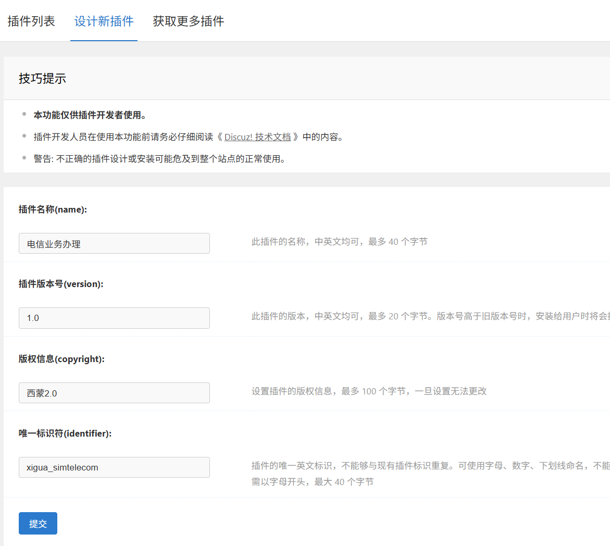
-
配置语言包
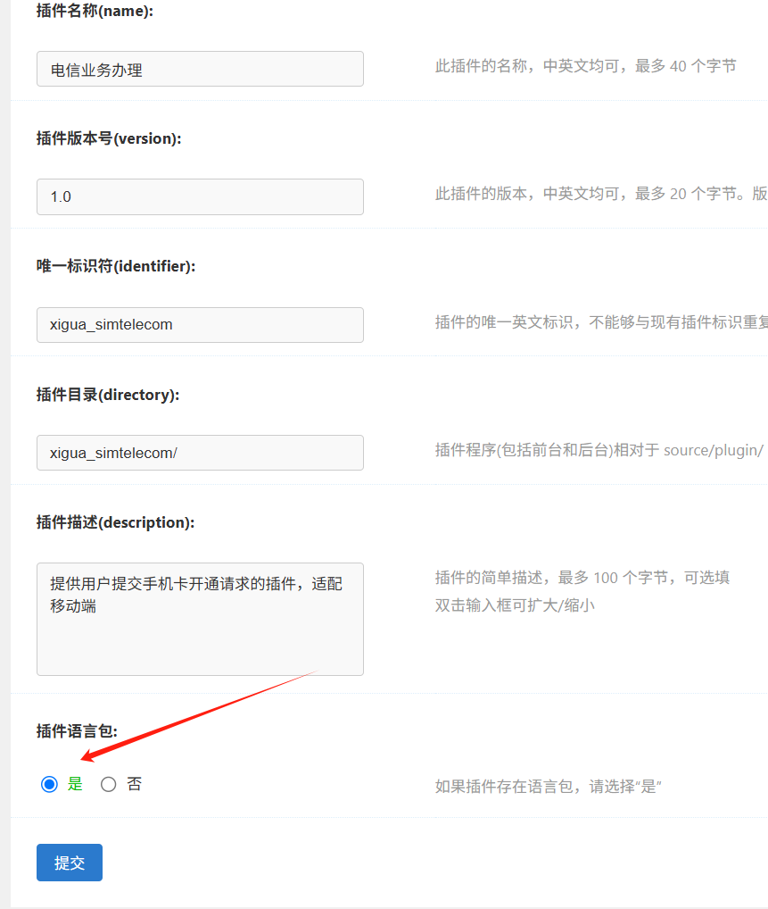
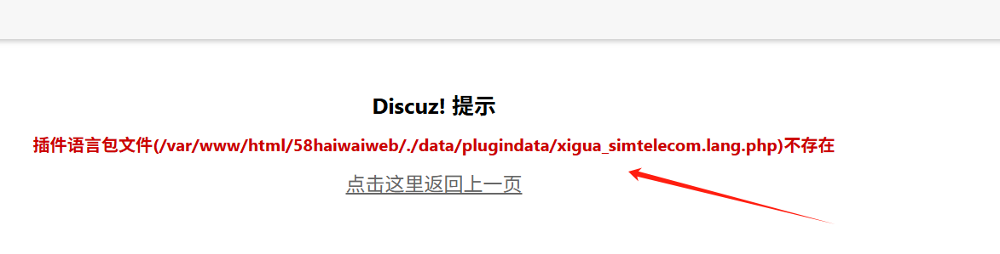
复制语言文件至指定目录sudo cp /var/www/html/58haiwaiweb/source/plugin/xigua_simtelecom/xigua_simtelecom.lang.php /var/www/html/58haiwaiweb/data/plugindata/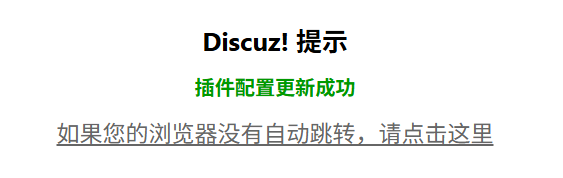
- 配置变量
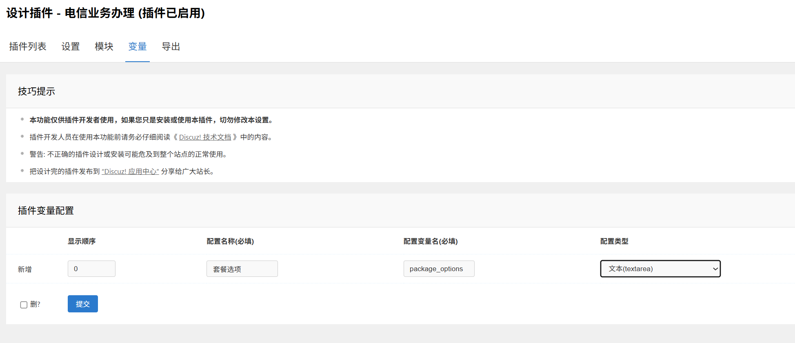
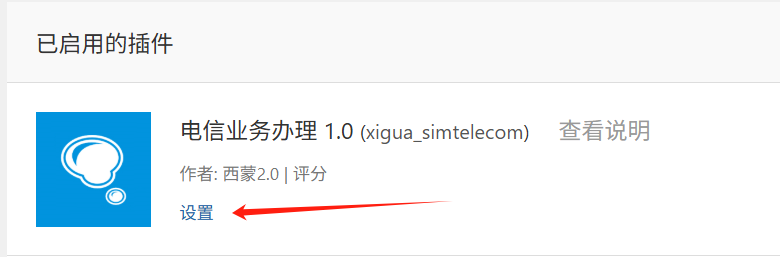
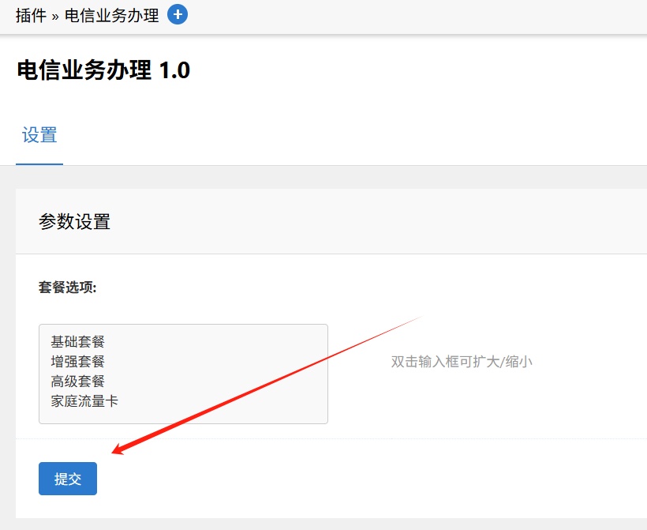
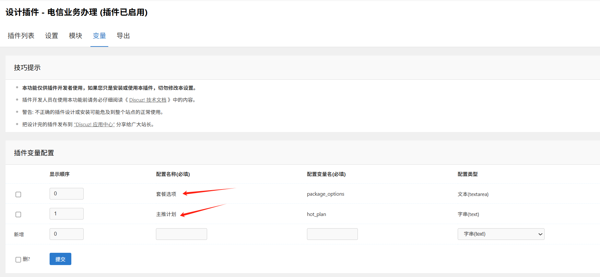
-
2.1.4 创建数据表¶
# 登录 MySQL（使用 hwdbadmin）
mysql -u hwdbadmin -p
# 切换数据库
USE haiwaidata;
# 创建插件数据表
CREATE TABLE IF NOT EXISTS `pre_xigua_simtelecom_log` (
`id` INT(10) UNSIGNED NOT NULL AUTO_INCREMENT,
`orderid` VARCHAR(50) NOT NULL DEFAULT '',
`username` VARCHAR(50) NOT NULL DEFAULT '',
`phone` VARCHAR(20) NOT NULL DEFAULT '',
`package` VARCHAR(50) DEFAULT NULL,
`address` TEXT,
`email` VARCHAR(100) DEFAULT '',
`dateline` INT(10) UNSIGNED NOT NULL DEFAULT 0,
`uid` INT(10) UNSIGNED NOT NULL DEFAULT 0 COMMENT '用户ID',
`username_dz` VARCHAR(50) NOT NULL DEFAULT '' COMMENT 'Discuz用户名',
`userip` VARCHAR(45) NOT NULL DEFAULT '' COMMENT '用户IP地址',
`operator` VARCHAR(50) DEFAULT '' COMMENT '58agent 运营商',
`status` TINYINT(1) NOT NULL DEFAULT 0 COMMENT '订单状态（0=待处理，1=处理中，2=已完成，3=已取消）',
`remark` VARCHAR(300) DEFAULT '' COMMENT '处理备注，最多100汉字',
PRIMARY KEY (`id`),
UNIQUE KEY `orderid` (`orderid`)
) ENGINE=InnoDB DEFAULT CHARSET=utf8mb4;
# 验证表是否创建成功
SHOW TABLES LIKE 'pre_xigua_simtelecom_log';
DESCRIBE pre_xigua_simtelecom_log;
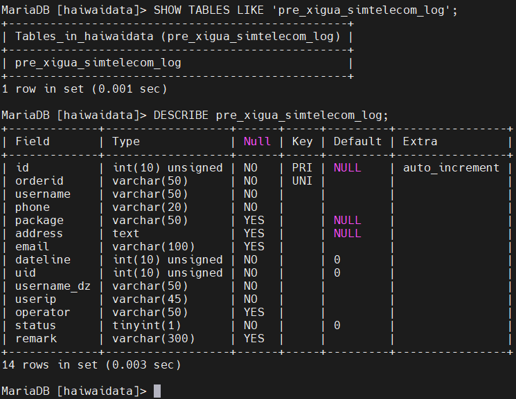
2.1.5 创建链接和测试¶
-
在西瓜分类中增加一个链接入口作为测试
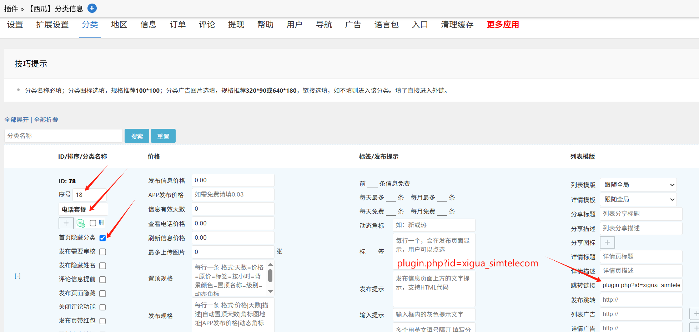
测试链接
同时通过小程序到58哈法同城通过跳转可以测试小程序下的表现
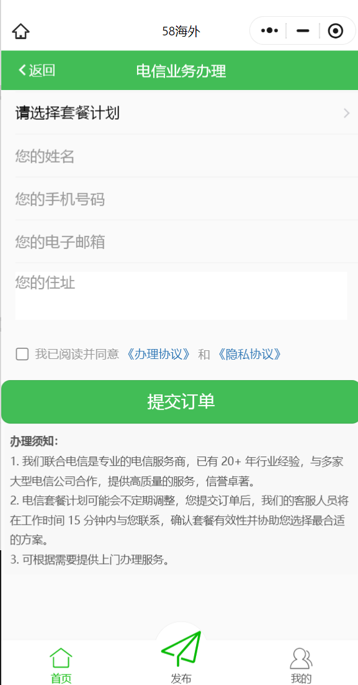
-
调整模板，使得风格与主程序一致（主要是页头和页脚的配色），更新文件。
-
报错1
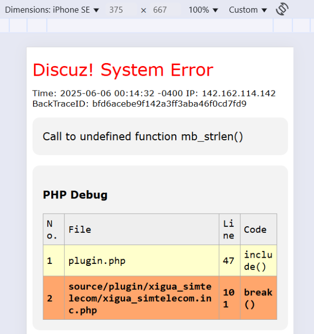
# 表示 PHP 中调用了 mb_strlen() 函数，但当前系统 未启用 mbstring 扩展，这是一个常见的多字节字符串处理库。
# 安装 PHP 的 mbstring 扩展（生产环境为 Debian + PHP 7.4）
sudo apt update
sudo apt install php7.4-mbstring
# 安装后重启 PHP 和 Nginx 服务
sudo systemctl restart php7.4-fpm
sudo systemctl restart nginx
- 报错2
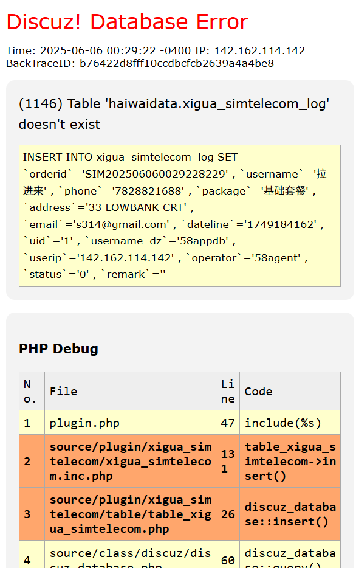
# 未找到数据表。
# 生产环境站点配置文件中的数据库表前缀是：$_config['db']['1']['tablepre'] = 'hw'；测试环境是'pre_'
# 更改数据表名称
mysql -u hwdbadmin -p
USE haiwaidata;
RENAME TABLE pre_xigua_simtelecom_log TO hwxigua_simtelecom_log;
# 验证是否更改成功
SHOW TABLES LIKE '%simtelecom%';
# 输出应为 hwxigua_simtelecom_log
2.1.6 配置后台邮箱发信功能（因为订单需要发送到商户客服邮箱）¶
- 先到自己邮箱获取到SMTP服务器，端口和账号密码
- 然后到后台进行配置，如下：
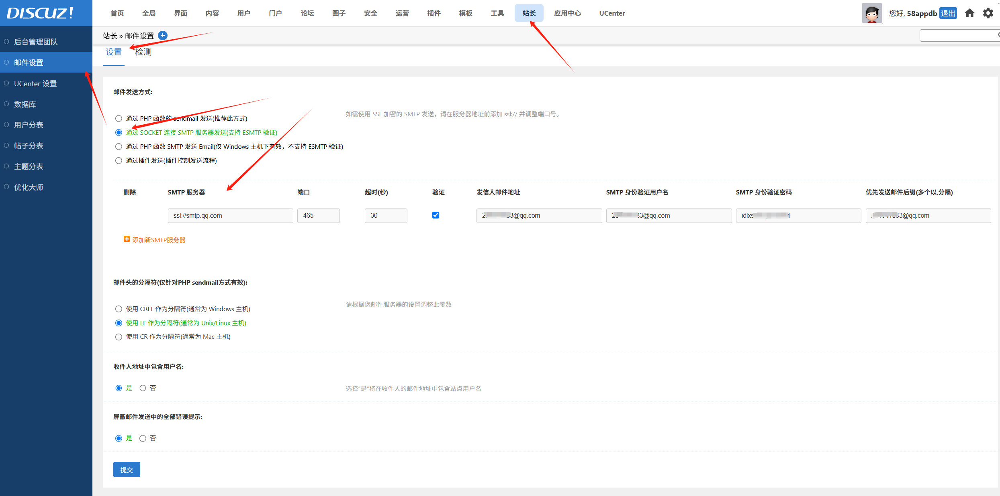
- 测试是否成功：
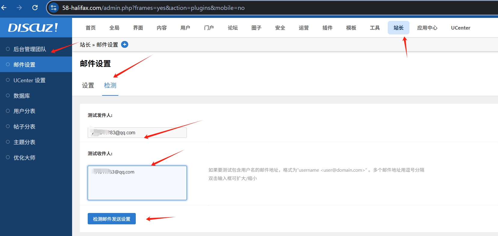
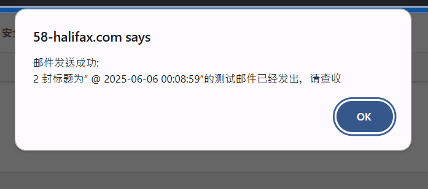
2.1.6 关闭设计插件功能¶
-
关闭“设计新插件”功能
2.2. xigua_partnercenter v1.0 (25年6月4日)¶
2.2.1 上传插件代码¶
-
使用 MobaXterm 或命令行上传至生产环境临时目录:
/home/ecs-user/ProjectDev/Rversion/xigua_partnercenter/ -
部署到站点目录
# SSH 登录生产服务器后，执行：
sudo rsync -avz --delete /home/ecs-user/ProjectDev/Rversion/xigua_partnercenter/ /var/www/html/58haiwaiweb/source/plugin/xigua_partnercenter/
sudo chown -R www-data:www-data /var/www/html/58haiwaiweb/source/plugin/xigua_partnercenter
2.2.2 后台安装插件¶
- 启用插件开发模式（如未启）
# 编辑配置文件：
sudo nano /var/www/html/58haiwaiweb/config/config_global.php
# 添加或确认存在：
$_config['plugindeveloper'] = 1;
- 后台安装插件
sudo cp /var/www/html/58haiwaiweb/source/plugin/xigua_partnercenter/xigua_partnercenter.lang.php /var/www/html/58haiwaiweb/data/plugindata/
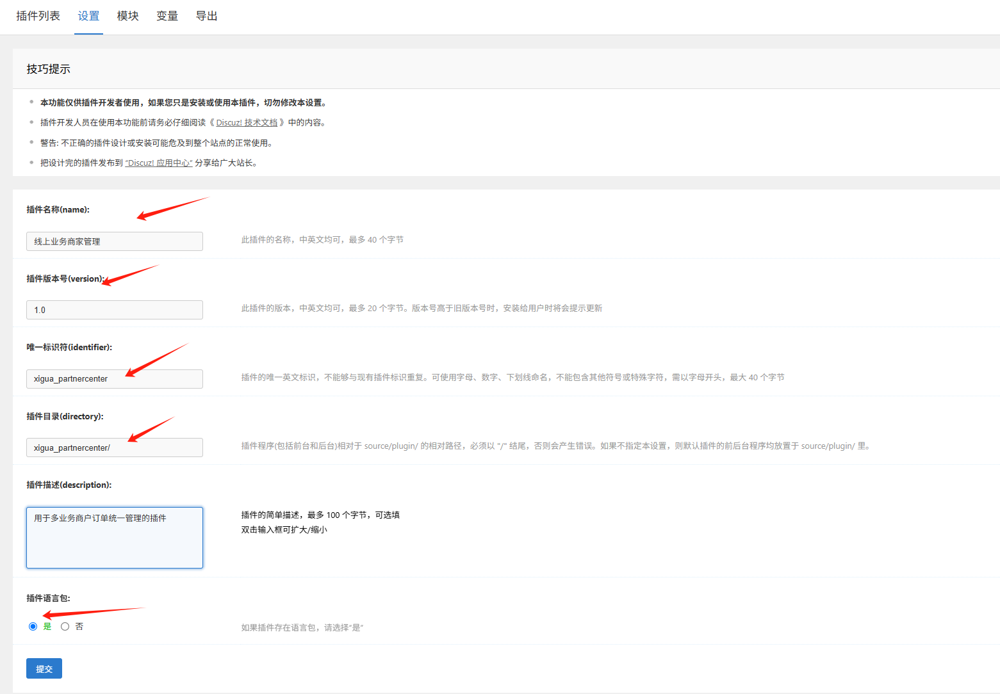
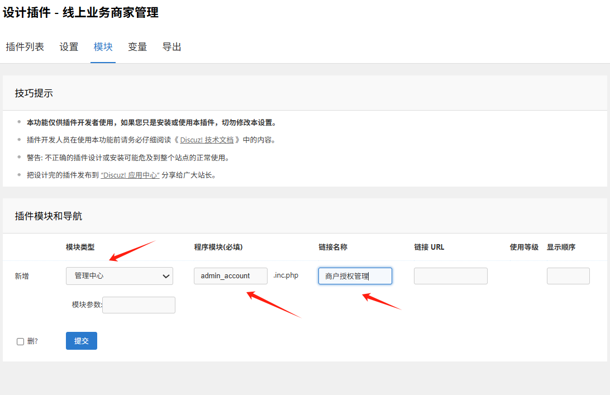
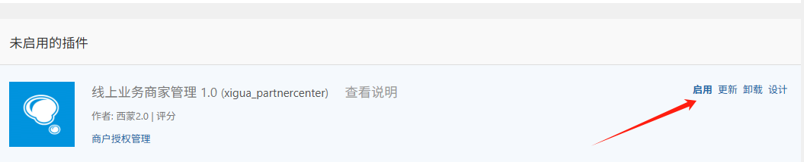
2.2.3 创建插件数据表¶
# 登录数据库：
mysql -u hwdbadmin -p
# 选择数据库：
USE haiwaidata;
# 创建表
CREATE TABLE IF NOT EXISTS `hwxigua_partnercenter_account` (
`id` INT(10) UNSIGNED NOT NULL AUTO_INCREMENT COMMENT '主键ID',
`uid` INT(10) UNSIGNED NOT NULL COMMENT '商户UID',
`biz_type` VARCHAR(30) NOT NULL COMMENT '业务类型标识',
`permission_level` TINYINT DEFAULT 1 COMMENT '权限等级，默认1',
`status` TINYINT DEFAULT 1 COMMENT '状态：1启用，0禁用',
`created_at` DATETIME DEFAULT CURRENT_TIMESTAMP COMMENT '创建时间',
`merchant_type` TINYINT DEFAULT 1 COMMENT '商户类型：1=个人，2=企业',
PRIMARY KEY (`id`),
UNIQUE KEY `uid_biz` (`uid`, `biz_type`)
) ENGINE=InnoDB DEFAULT CHARSET=utf8mb4;
# 验证表是否创建成功
SHOW TABLES LIKE 'hwxigua_partnercenter_account';
DESCRIBE hwxigua_partnercenter_account;
2.2.4 验证与测试¶
-
添加业务和添加管理员（站长）授权
-
添加商家（用户）授权，先获取到用户的UID
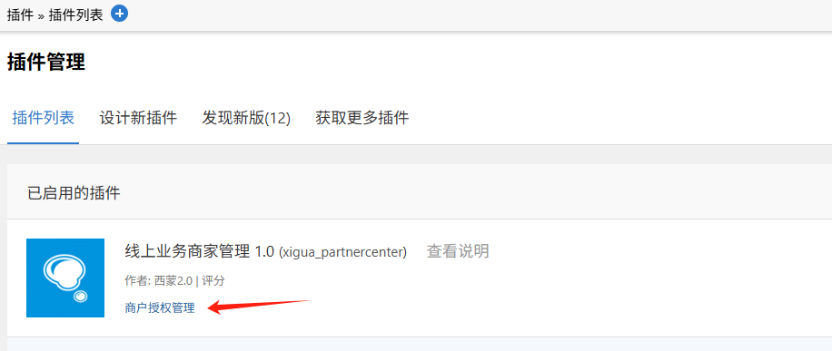
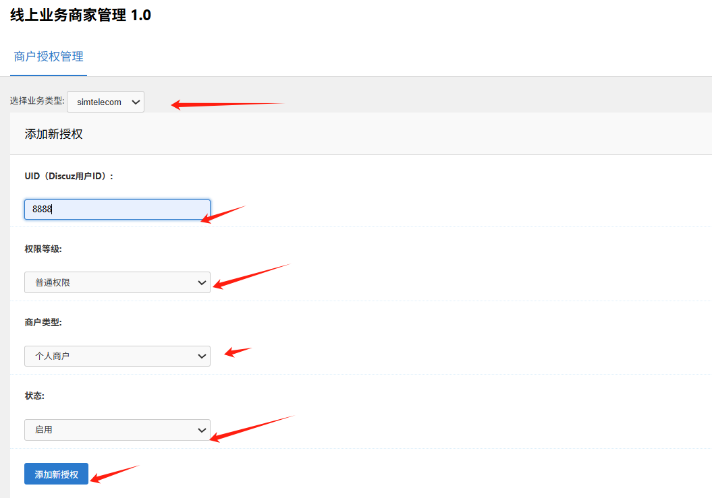
授权商家（用户）通过以下链接测试：
https://58-halifax.com/plugin.php?id=xigua_partnercenter&biz=simtelecom
-
创建站内链接（支持小程序测试）
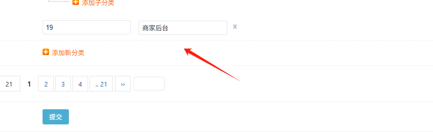
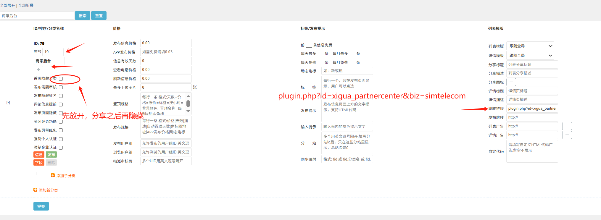
-
调整移动端模板
- 套用xigua_simtelecom插件的header
- 返回图标在iPhone手机小程序上不显示，改用‹ 字符
- 调整提交更新成功之后的显示页面
- 增加未更新内容提交显示的模板